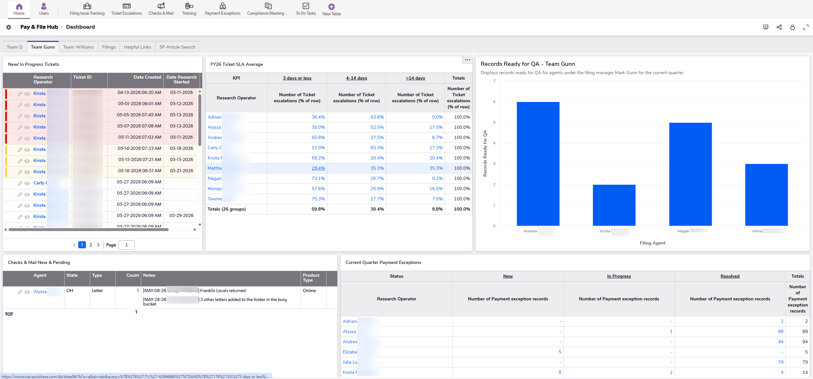
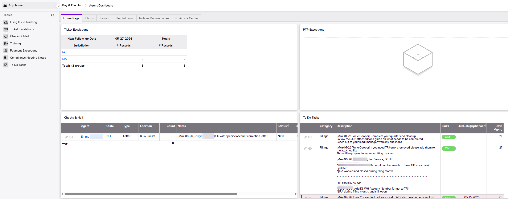

Payroll tax analyst building smarter compliance, training, and automation solutions.
I combine payroll tax expertise, process improvement, AI-assisted workflows, dashboard development,
and training design to solve operational problems and help teams work more accurately and efficiently.
I am a payroll tax, compliance, and operations professional with experience resolving federal,
state, and local payroll tax issues; writing agency responses; supporting amended returns;
building dashboards; and creating tools that make complex processes easier for teams to follow.
My background includes payroll tax notice resolution, multi-state compliance, SOP and knowledge base
authoring, agent coaching, advanced Excel reporting, AI-enabled workflow tools, and operational
process improvement. I am especially interested in roles where compliance knowledge, automation,
analytics, and clear communication intersect.
Featured Accomplishments
A few examples of how I have used compliance knowledge, automation, and reporting to improve team outcomes.
AI WorkflowTax Notices
AI-Powered Notice Response Tool
Built an AI bot that reads payroll tax case notes and drafts agency email responses for notice cases.
Reduced manual drafting time by 60%.
Improved response consistency across the team.
Supported faster, clearer agency communication.
AutomationDashboards
Cross-Functional Project Dashboard
Built a JIRA-connected automation dashboard used by five cross-functional teams to centralize project tracking.
Improved turnaround by 25%.
Saved roughly $50K annually in manual coordination time.
Gave teams a shared view of project status and blockers.
CompliancePayroll Tax
Payroll Tax Notice Resolution
Managed federal, state, and local payroll tax notices from intake through confirmed resolution.
Prepared agency response letters and penalty abatement requests.
Supported Form 941-X corrections and W-2c reconciliation work.
Worked across FICA, FUTA, FITW, SUI, and multi-state requirements.
Case Study: Enterprise Payroll Tax Operations Platform
Designed and built a centralized QuickBase platform supporting payroll tax operations,
compliance workflows, training delivery, workload management, and leadership reporting.
Role-Based Operational Platform for Leadership and Agents

Leadership Dashboard
Provides managers with ticket aging visibility, SLA metrics, QA readiness tracking,
payment exception monitoring, checks and mail oversight, and team workload management.

Agent Dashboard
Personalized workspace displaying assigned tickets, payment exceptions,
agency correspondence, training resources, compliance updates, and operational tasks.
Business Challenge
Information was spread across multiple processes and systems. Leadership lacked a consolidated operational view while agents needed a simplified experience focused on daily priorities.
Leadership Features
Team-specific dashboards, SLA monitoring, ticket aging analysis, quarterly filing QA tracking, payment exception management, and agency mail oversight.
Agent Features
Personalized work queues, state-specific ticket tracking, payment exceptions, checks and mail processing, and centralized task management.
Training Enablement
Built a training library covering Excel, AI prompting, internal systems, payroll processes, and onboarding resources.
Compliance Automation
Created a workflow that automatically notifies impacted agents when compliance meeting notes are entered and assigned.
Business Impact
Centralized operations, improved visibility, reduced communication gaps, streamlined workload management, and created scalable training resources.
Practical strengths for roles in payroll tax, compliance operations, automation, business analysis,
process improvement, training, and web-based learning.
Payroll Tax Compliance
Tax Notice Resolution
Penalty Abatement
Form 941-X
W-2c Reconciliation
AI Workflow Tools
JIRA Dashboards
Advanced Excel
QuickBase
Airtable
SOP Authoring
Training Design
Resume
Download my resume to learn more about my experience in payroll tax compliance,
automation, process improvement, training, and operational leadership.
Open to roles where compliance, automation, training, and operational excellence matter.
I am interested in opportunities that value strong documentation, payroll tax knowledge,
process improvement, dashboard development, AI-assisted workflows, and practical problem-solving.